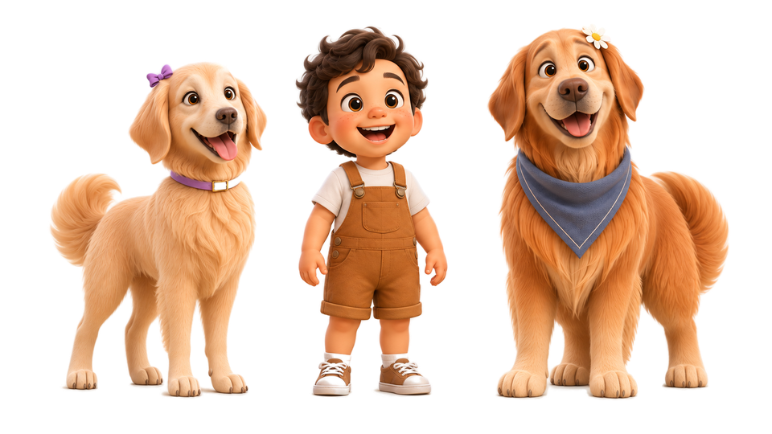

🍃 Ritmo Tranquilo
Planos longos, cores aconchegantes de papel creme e trilha acústica suave, sem hiperestimulação visual.
Sem cortes a cada 2 segundos e sem gritos. Uma animação 3D de baixa estimulação sobre família, natureza e pequenas virtudes, pensada para crianças pequenas assistirem com os pais e avós — e desligarem a tela em paz para brincar.

Planos longos, cores aconchegantes de papel creme e trilha acústica suave, sem hiperestimulação visual.
Histórias cotidianas com pais presentes, avós carinhosos e animais amigos que ensinam pelo exemplo.
Episódios curtos com começo, meio e fim, feitos para inspirar brincadeiras no mundo real logo depois.
Nossos canais oficiais no YouTube e no Instagram abrirão em breve com a 1ª temporada e o Abecedário de Virtudes.